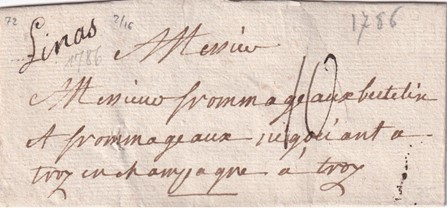

Bureau ouvert au XVIIem siècle
Linas
| Marque | N° | Port | Dimen. | Date | Coul. | Indice | Cote |
|---|---|---|---|---|---|---|---|
| 1 | port dû | 20mm | 1773-1777 | rouge | I-22 | 120.00 | |
| 1A | port dû | 20mm | 1774-1782 | noir | I-22 | 120.00 | |
|  | 2 | port dû |  |
1731-1783 | manuscrit | I-20 | 120.00 |

| 3 | port payé |  |
1781 | manuscrit | I-20 | 120.00 |
|
| 4 | déboursé | |
1774-1779 | manuscrit | I-20 | 120.00 |
|
Blason de Linas |
|||||||
lorem